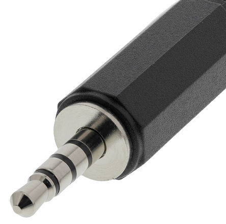

Products
 3V Ceramic Piezo Transducer 35/2.8 Code:5454
3V Ceramic Piezo Transducer 35/2.8 Code:5454
Product Details:
The 3v Ceramic Piezo Transducer can be used to both produce and pick up surface vibration. In sound production these electrical devices are used both in speaker elements or as contact microphones. Other applications have included lighting LED bulbs, touch pad technology, sensors, firealarms, kids sound toys and more. The piezoelectric effect works by converting applied surface vibration to electricity or vice versa converting electrical current to vibration.
The discs are supplied with 5" cables pre-soldered. There is a 3V peak when applying electrical current to the disc and a maximum 90dB output.
 2 Core Screened Grey Microphone Cable, 300 V Code:2758
2 Core Screened Grey Microphone Cable, 300 V Code:2758
Product Details:
Flexible microphone cable with diameter of 5.5mm. Screening properties make this cable suitable for uses in headphone cable, Mic cable, RCA leads, XLR leads. Grey PVC insulated with 2 x 28/0.1mm copper stranded conductors and single lap screen made from copper. 300V power rating,
The cable is supplied per meter lengths and can be ordered with ends pre-cut for easy condtruction.
 Pro 2 Core Screened Black Microphone Cable, 60 V Code:3548
Pro 2 Core Screened Black Microphone Cable, 60 V Code:3548
Product Details:
Pro 2 core black microphone cable with outer diameter of 3.7mm. Screened cable suitable for uses in headphone cable, Mic cable, RCA leads, XLR leads, subwoofer cable. Voltage rating of 60 volts. Cores are 7/0.2mm tinned annealed copper insulated with polyethylene. Cores inside black semi-conducting layer with a 7/0.2mm tinned copper drain wire, to ensure good screening properties. These cables are flexible with low handling of noise
The cable is supplied per meter lengths and can be ordered with ends pre-cut for easy condtruction.

3.5mm Jack Plug Code:1987
Product Details:
3.5mm Male Jack Connector. Comes with black nylon shielding which can easily be screwed over to hide soldering points. Material comprised of nickle silver alloy. This connector is ideal for connections such as AUX inputs, MP3 players, iPods, iPads or line-in inputs. When solderimg this to microphone cable, solder the live (red cable) to the inner point closest to the top of the jack. Solder the remaining ground part at the bottom of the jack to the shielding or negative cable (black cable), making sure not to touch the two cables.
Jacks connectors are sold as individual items, please contact to bulk buys.
 6.35mm Mono Jack Plug Code:1986
6.35mm Mono Jack Plug Code:1986
Product Details:
6.35mm Male Jack Connector. Comes with gold contact plating and screwable cover to hide soldering points. Material comprised of nickle silver alloy. This connector is ideal for connections such as amplifiers, Pa Systems, Effect Pedals, guitar or other instruments with 6.35mm female jack. When solderimg this to microphone cable, solder the live (red cable) to the inner point closest to the top of the jack. Solder the remaining ground part at the bottom of the jack to the shielding or negative cable (black cable) making sure not to touch the two cables.
Jacks connectors are sold as individual items, please contact to bulk buys.
 3Way Cable Mount XLR Connector :3880
3Way Cable Mount XLR Connector :3880
Product Details:
XLR Male audio connector. Latch system to ensuring a reliable connection. These connectors are most often used in amplifers, mixers, PA sytems and recording equipment. The XLR connector is compatible with powered and low-level signal circuitry. Available in nickel or black chrome finishes. This connector has dual terminals which can be soldered or crimped.
Jacks connectors are sold as individual items, please contact to bulk buys.
Pricing and Availability
| Products | |||
| Item No: | Item Name: | Price Per Itm/Meter: | Availability |
| 5454 | 3V Ceramic Piezo Transducer 35/2.8 | .€2.99 | ✓ |
| 2758 | 2 Core Screened Grey Microphone Cable, 300 V | .€1.50 | ✓ |
| 3548 | Pro 2 Core Screened Black Microphone Cable, 60 V | .€2.99 | ✓ |
| 1987 | 3.5mm Jack Plug | .€2.99 | ✓ |
| 1986 | 6.35mm Mono Jack Plug | .€2.99 | ✓ |
| 3880 | 3Way Cable Mount XLR Connector | .€4.99 | ✓ |
| . | |||